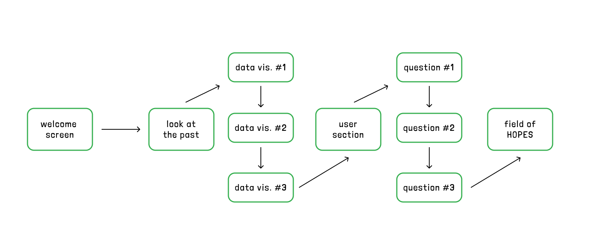

THE NEXT
FIVE
case study
an interactive web experience about
imagining the futures we want.
case study
an interactive web experience about
imagining the futures we want.
what this it?
Instead of only asking “what’s next,” this project speculates further out... five years from now, for yourself, your community, society, and the world. Imagining possible futures (the ones we want, and the dystopian ones we don’t) is one way being able to work through your own identity, values, and sense of purpose. Picturing where we might end up helps us decide what to do now to move toward those futures, or away from them.
The Next Five is a single, continuous scrolling experience. It opens with real data on how much has already changed between 2021 and 2026: how we connect, work, learn, and feel. Then it turns the question back on the visitor with three small prompts about the past, the present, and a hope for five years from now. That hope is “planted” as a flower in a shared Field of Hope, growing alongside everyone else’s answers.
Graduating students and young adults standing at that “what’s next” edge — and really, anyone willing to sit with the future for a moment.
Make the anxiety feel less isolating, invite honest reflection on values, and turn a private worry into a collective, hopeful artifact.
The web is the right medium for this. Visitors explore the data and build their own narrative, then their answer becomes part of the data itself. Every new hope makes the field a little fuller for the next person.
comparative research
Before designing, I studied two existing “time capsule” web products to understand what makes a future-facing, reflective tool feel meaningful, and what makes it feel hollow.
Built around family and legacy, something passed down through generations. That generational handoff felt genuinely meaningful. But the experience read like it was selling a service: another subscription, an exchange. I wanted my project to feel human and personal, not transactional.
More social and interactive, a public calendar of openings and a community feed that made the site feel alive. The interface was friendly and intuitive. But it leaned on attention-grabbing, social-media patterns, and capsules were so quick to make that they lost their weight. Creating one felt like filling out a form.

Comparative analysis. Studying existing products side by side to find the gap my project should fill.
These two examples pulled me in opposite directions, and the gap between them became my brief. I didn’t want the cold subscription feel of the first or the disposable social-feed feel of the second.
The most useful insight came from that “just a form” moment: if creating something meaningful feels like paperwork, the meaning evaporates. So I rebuilt the experience around guiding questions instead of blank fields, paced one prompt at a time, and wrapped it in data and a shared field so a single answer feels part of something larger. The goal shifted from “store a message” to “have a small, honest moment with the future.”

Annotated bibliography. The sources behind the project’s framing and the data shown in the “changed” section.
look & feel
I chose a single, confident green on a clean white “paper” background. Green carries growth, hope, and nature: it ties directly to the flowers and the sprout, and it’s the emotional opposite of the cold, corporate feel I found in my research. The white paper keeps everything calm and personal rather than busy or salesy. Almost nothing is filled; the green lives in outlines and shadows, which keeps the page feeling light and hand-made.
Everything is set in Londrina Solid. Its slightly irregular, hand-drawn weight makes the interface feel made by a person. The big section words use a white fill with a heavy ink outline and a hard offset shadow, like a sticker or a poster, so each turn of the story lands with a beat.
A small leaf sprout appears throughout and gently floats a tiny character growing alongside the visitor. What you can’t see from the finished site is how much the visual language shifted through feedback:
An early version hid flowers that didn’t match a filter and used a soft glow to mark your own. Testers found the disappearing flowers confusing. Now every hope stays visible (filtering only outlines the matches) and your own flower gets a clean green outline instead of a glow.
The stats were first stacked in one block. I restructured each card so the year sits above the big number and the meaning sits below it, giving every statistic a single, obvious reading order.
The look didn’t arrive all at once. It moved from rough sketches, to low-fidelity wireframes, to the finished green-outline system to optimize layout, hierarchy, and tone.

Sketches. First rough passes at structure and flow.

Lo-fi wireframes. Blocking out each section before any styling.

Design progress. The palette, type, and components settling into the final hand-drawn system.
patterns & flow
The experience is one continuous vertical story, so navigation maps directly to meaning: a down arrow (↓) always moves you forward through the narrative, while side arrows (← →) browse within a set.

User flow. The single linear path from the opening data, through the three questions, to planting a hope in the field.
Arrow-and-dot carousel — one stat at a time, dots show where you are.

looking forward, five years from now…
what’s one thing you hope is true by then?
One question on screen at a time, in a horizontal slider.


The shared Field of Hope (click any flower for its hope and category; filter pills outline a theme.)
Reducing cognitive load drove most of these calls. One question on screen at a time, short prompts, and placeholders like “even a feeling or single word is enough” lower the pressure to perform. The arrow carousel replaced a draggable rail that testers didn’t realize they could touch.
Pill buttons and round arrows clearly look pressable.
Selecting a flower fills it green; planting a hope bumps the live counter and auto-opens your flower’s tooltip.
↓ moves down the page; ← → move through cards. Direction matches meaning.
The same green-outline language repeats from the first button to the last flower.
testing & iteration
User testing reshaped the project more than any other phase. A few clear patterns emerged, and each one became a change.

Usability testing. Watching real people move through the prototype surfaced the friction points below.
Those findings are the difference between the two builds. Version 1 proved the concept; Version 2 is the calmer, clearer result of testing.

Version 1. The first working build, before usability testing.

Version 2. Refined navigation, clearer hierarchy, and the redesigned field.
If I kept developing The Next Five, I’d source and cite the data more rigorously, let people return to their own hope over time (leaning into the real time-capsule idea), add gentler motion and richer interactions to the field.
reflection
Meaning in a digital experience comes from pacing and restraint, not features. The difference between “a form” and “a moment” was mostly about asking one good question at a time and giving each answer somewhere to live.
The Field of Hope. Watching private answers become a shared meadow. and seeing your own flower outlined among strangers’, captures the whole point of the project in a single screen.
Getting the data, the questions, and the field to feel like one calm story instead of three separate widgets — and untangling the interactions (drag vs. arrows, hide vs. highlight) until they felt obvious.
Testers who paused on the last question. When someone slowed down to actually think about what they hope is true in five years, the project was doing exactly what it set out to do.